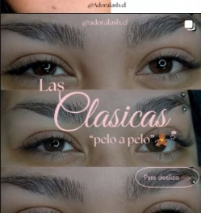

Técnicas realizadas con fibras coreanas ultralivianas para cuidar la salud de tu pestaña natural. Consulta nuestro catálogo en WhatsApp para evaluar la ideal para ti.
👁️ Asesor de Visagismo: ¿Cuál es tu tipo de ojo?
Toca la forma de tus ojos para descubrir tu técnica ideal de autor:
Recomendación Visagista
Efecto Wispy en Curva D
Para párpado caído o encapotado, la curvatura D combinada con espigas Wispy proyecta la fibra por encima del pliegue natural, abriendo la mirada de inmediato y disimulando la pesadez del párpado.

01. Técnica Natural
Las Clásicas (Pelo a Pelo)
Una extensión individual sobre cada pestaña natural. Acabado limpio, sutil efecto máscara diario y elegancia discreta.
Fotografías 100% auténticas de sets realizados en nuestro estudio en Talca.
Wispy Chic • Textura y espigas
Volumen Tupido • Marco sedoso
Lifting & Tinte • Elevación natural
Anime Spikes • Efecto Doll Eye
Aislamiento limpio pelo a pelo
Cat Eye Delineado • Longitud exterior
Salud Ocular & Durabilidad
Guía Oficial de Cuidados Posteriores
Para garantizar la máxima retención y proteger la salud de tu pestaña natural, sigue estas pautas profesionales recomendadas por especialistas.
Paso 01
Primeras 24 a 48 Horas
Fase de curado: Evita el vapor directo de duchas calientes, saunas, llanto o piscinas. El adhesivo médico necesita completar su polimerización para un agarre duradero.
Paso 02
Higiene & Lavado Diario
Lash Shampoo obligatorio: Lava tus pestañas a diario con espuma limpiadora libre de aceites (oil-free). Mantener el folículo libre de grasa y maquillaje evita infecciones y caídas prematuras.
Paso 03
Cero Aceites y Desmaquillantes Grasos
Química del adhesivo: No uses desmaquillantes bifásicos, aceites (ricino, coco) ni máscara de pestañas waterproof. El aceite disuelve el pegamento de grado médico.
Paso 04
Cepillado & Fricción al Dormir
Trato delicado: Cepilla tus pestañas con el goupillon únicamente cuando estén 100% secas, de medios a puntas. Evita dormir boca abajo para no deformar el abanico.
Ciclo Biológico
Mantenimiento & Retoques Cada 15 a 21 Días
Es totalmente natural perder entre 2 a 5 pestañas diarias por el ciclo biológico de regeneración folicular (anágeno y telógeno). Para mantener tu set tupido y equilibrado, agenda tu retoque cada 2 o 3 semanas con al menos el 40% del set conservado.
Planifica tu Mirada
¿Cómo evoluciona tu set en el tiempo?
Toca cada etapa para ver cómo luce y cuándo es tu momento óptimo de retoque:
✨ Estado del set (85% - 100%): Tus pestañas lucen tupidas, alineadas y firmes. Solo requieres lavado diario con lash shampoo oil-free y cepillado matutino en seco.
⭐ Momento óptimo de retoque (50% - 60% conservado): Se remueven extensiones crecidas por el ciclo natural y se reponen los espacios nuevos. Es la cita más rápida, cómoda y económica para mantener tu mirada siempre perfecta.
🔄 Renovación de set (Menos del 40%): Tu pestaña natural ha completado gran parte de su ciclo biológico de caída y crecimiento. Se recomienda un retiro higiénico con removedor en crema y postura de un set nuevo desde cero.
🏠 Atención Exclusiva • Talca
Atención Privada en Home Studio Cómodo y Exclusivo
En Adora Lashes te recibimos en un acogedor Home Studio privado en Talca, equipado con instrumental esterilizado en calor seco, iluminación profesional y un ambiente sumamente cómodo y relajante para tu descanso.
🔒 Por seguridad y privacidad: Al tratarse de un estudio privado, la dirección exacta y ubicación por GPS se comparten de manera confidencial vía WhatsApp una vez confirmada la reserva de tu hora.
Citas en Talca • Sin Fricción
Agenda tu Cita en 3 Toques
Rápido y sin formularios largos. Elige tu servicio, tu momento ideal y te atendemos directo en WhatsApp.
1. Elige tu Mirada2. Tu Nombre & Cupo
¿Qué efecto deseas lucir en tu mirada?
Toca tu favorito para continuar de inmediato:
¡Casi listo! ¿Cómo te llamas?
Solo tu nombre para atenderte de forma personalizada:
Servicio elegido:Las Clásicas
Modalidad:Home Studio Privado en Talca
💬
Coordinación directa por WhatsApp: La dueña te confirmará los días y horarios libres de esta semana de forma inmediata, sin lapsos rígidos ni confusiones.
Acceso Exclusivo Dueña
Ingresa tu PIN de seguridad:
Ajustes Rápidos ✨
Modifica tu anuncio y WhatsApp sin tocar código.
✏️ Modo Diseñador (Haz clic en cualquier texto para editarlo)